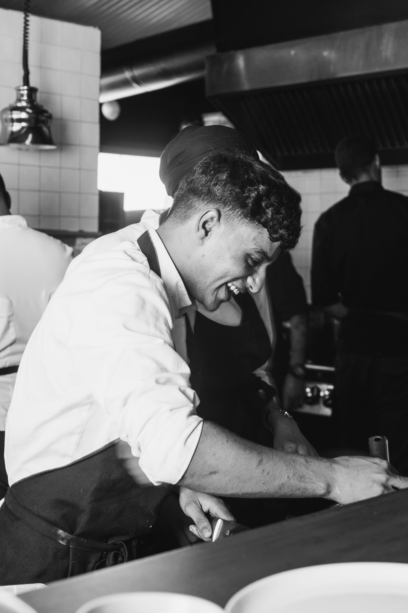
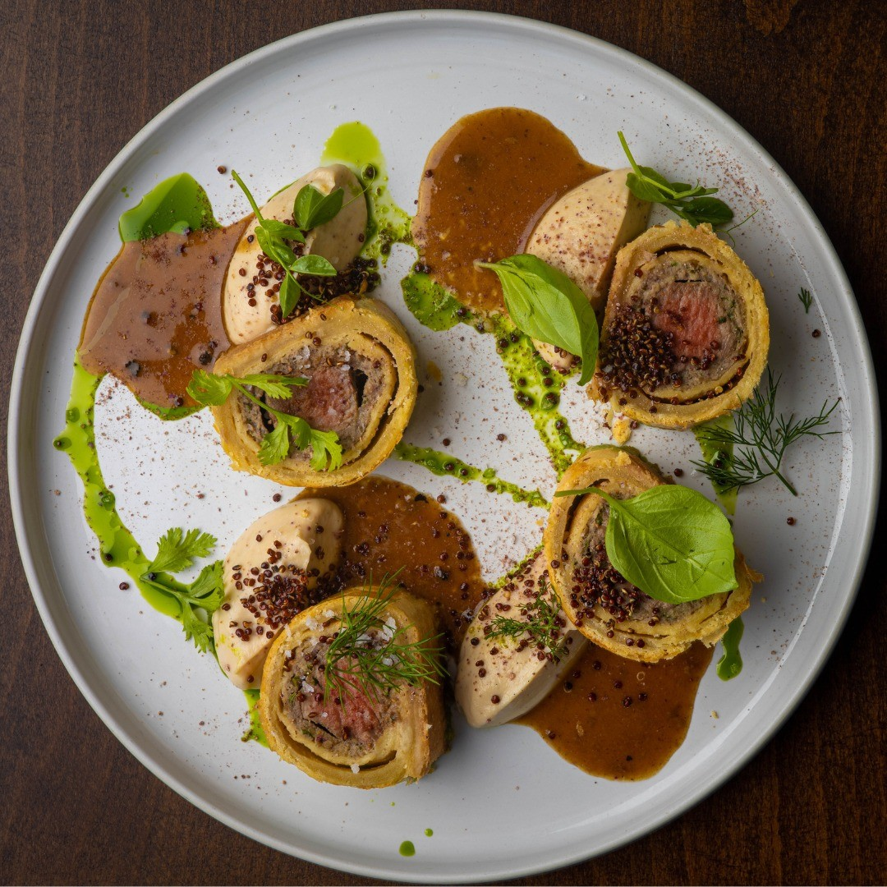
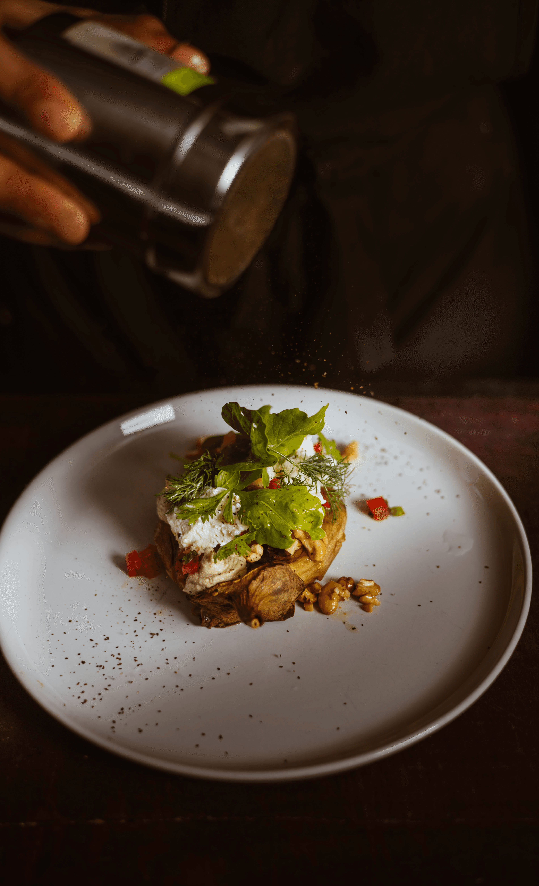
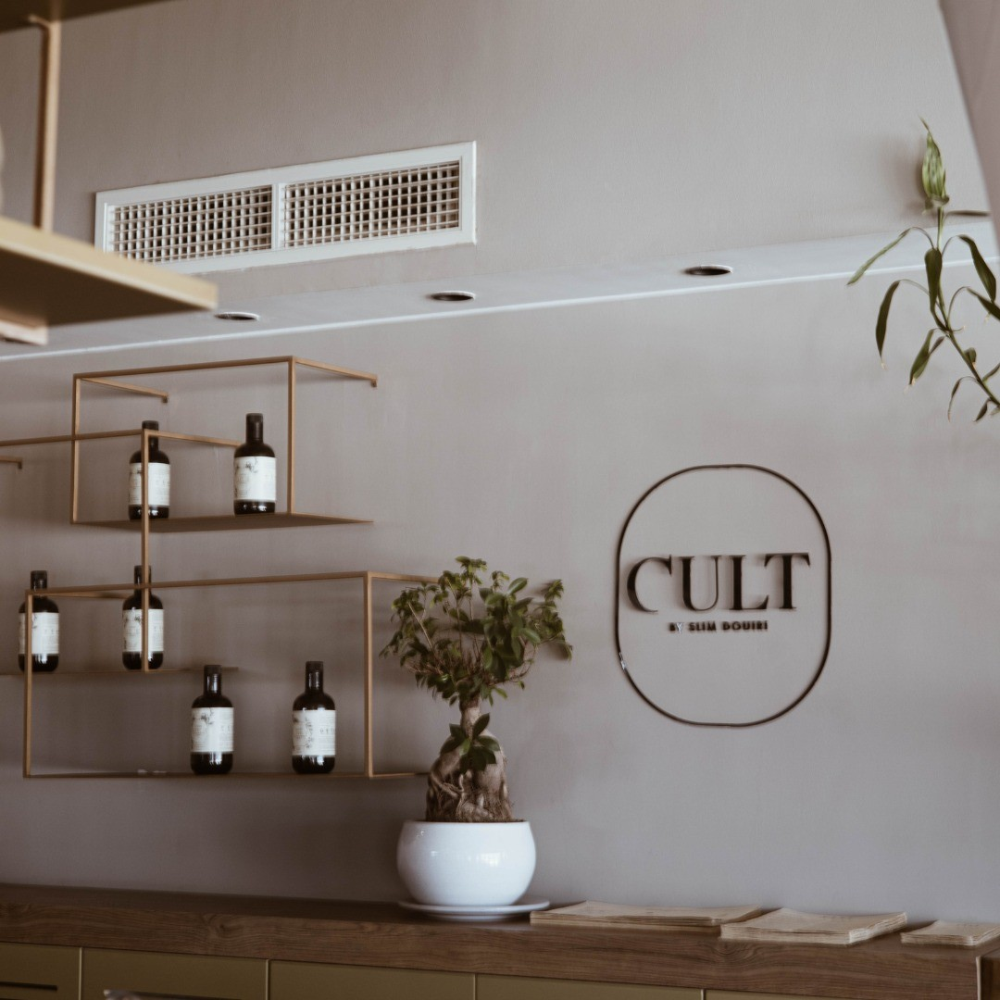

CULT BISTRO
Food and lifestyle photography for Cult Bistro, capturing both the dishes and the team to create a warm, authentic and engaging visual representation of the restaurant.







PROJECT DETAILS
I photographed Cult Bistro with a focus on both its food and the people behind the restaurant. The goal was to create a visual library that reflected the brand’s personality, quality and everyday atmosphere.
I focused on composition, lighting, texture and presentation to showcase the dishes in a natural, appetizing and visually consistent way.
I photographed the staff in their working environment, capturing natural moments, interactions and details that helped communicate the human side of the restaurant.
The final photo series combines food and team imagery to create a cohesive and authentic visual identity for Cult Bistro across social media and promotional communication.
MORE PROJECTS

Africa Jade Thalasso
Marketing and visual communication developed for Africa Jade Thalasso to strengthen the hotel’s image, promote its services and support digital and promotional campaigns.
BEN YAGHLANE — RAMADAN CAMPAIGN
A three-day Ramadan production focused on photographing and art directing a full month of recipe content for Ben Yaghlane.
JAB CLUB
Ongoing sports photography collaboration for JAB CLUB, documenting boxing and CrossFit sessions through dynamic, high-energy imagery.
SEVEN REAL ESTATE
A complete visual identity and branding project created to give Seven Real Estate a modern, premium and consistent image across digital platforms.